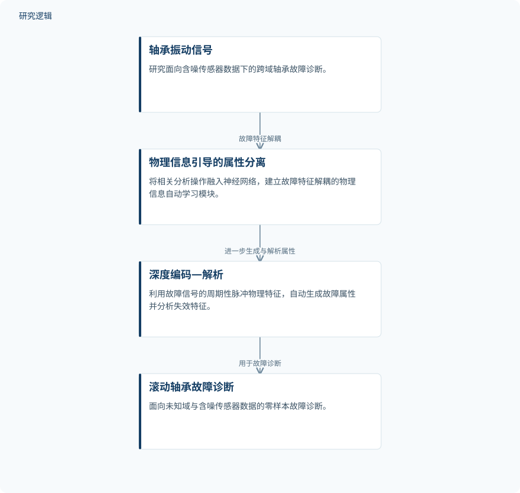

摘要解读
面向含噪传感器数据跨域轴承故障诊断的物理信息深度编码—解析网络
A Physics-Informed Deep Encoding-Parsing Network for Cross-Domain Bearing Fault Diagnosis Under Noisy Sensor Data
解读更新 2026-11-10 17:29 · 依据公开摘要整理，未核验全文细节
工况变化与传感器噪声，会让轴承故障诊断面临跨域适应难题。这项研究尝试把故障物理信息嵌入神经网络，帮助模型分离故障属性，并识别未知域中的故障。阅读价值在于理解物理信息如何参与特征学习，以及区分已报告的跨域表现与尚待验证的跨设备应用潜力。
文章目录
跨工况诊断为何还要考虑故障物理
轴承振动信号是判断设备运行状态的重要依据。摘要指出，现有跨工况零样本故障诊断方法通常仍需要大量学习样本，同时未能充分建模和分析轴承失效的物理机制及含噪传感器信号特征，限制了诊断模型的域适应能力。
因此，本文关注的不只是识别故障，还包括如何在工况变化、传感器数据含噪时保持跨域诊断能力。“零样本”在这里不能直接理解为整个模型无需训练数据，其具体任务定义仍需进一步阅读原文。
从相关分析到深度编码—解析网络
研究首先将相关分析操作融入神经网络，建立用于轴承故障特征解耦的物理信息自动学习模块，使故障属性的分离受到物理信息引导。摘要明确交代了这一设计思路，但没有展开相关分析的具体形式或模块实现。
随后，研究利用故障轴承信号中周期性脉冲的物理特征，设计深度编码—解析网络，自动生成故障属性并分析失效特征，用于滚动轴承故障诊断。这里的关键是让故障信号的物理特征参与属性生成与解析，而非仅作为背景解释。
依据摘要整理的物理信息诊断过程


仅概括摘要明确描述的方法关系，不表示具体网络结构或实验配置，也不是论文原图。
下载 SVG图示关系说明
实线表示相邻阶段的信息流，虚线表示跨阶段联系或反馈。
轴承振动信号 → 物理信息引导的属性分离：故障特征解耦；物理信息引导的属性分离 → 深度编码—解析：进一步生成与解析属性；深度编码—解析 → 滚动轴承故障诊断：用于故障诊断
未知域与含噪数据上的定性优势
摘要报告，与先进方法的比较表明，该方法在未知域中表现更好，即使传感器数据含有噪声也具有优势。不过，摘要未给出具体评价指标、提升幅度或噪声条件，因此目前只能概括这一比较结论，不能量化性能收益。
作者还指出，该方法具有跨设备实施的潜力，可能用于解决无数据、跨设备自适应故障诊断问题。应用潜力不等于已经完成验证，不能据此断言方法已实现无数据的跨设备部署。
样本、比较条件与验证边界仍待核对
仅凭本次摘要，无法判断数据集与设备构成、学习样本规模、故障类别、工况划分，以及零样本任务的具体设置；也无法确认比较方法、噪声类型与强度、结果波动和跨设备验证范围。这些属于摘要未提供的信息，并不意味着论文没有开展相关实验。
阅读启发：追问物理信息怎样支持迁移
阅读启发：后续阅读可重点关注，相关分析如何对应故障属性分离，周期性脉冲特征如何进入编码—解析过程，以及比较结果能否说明这些设计对含噪跨域诊断的作用。对于智能运维应用，还应核对跨工况结果与跨设备潜力各自的证据边界，避免将二者视为同一种泛化能力。
以上为本站阅读启发与建议，不是论文已验证的结论。